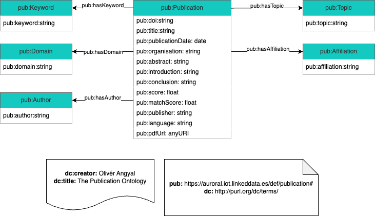

<h2 id="desc" class="list">[Ontology Name]: Description <span class="backlink"> back to <a href="#toc">ToC</a></span></h2>

<span class="markdown"><span class="markdown">Figure 1 presents an overview of the classes and properties included in the AURORAL Publication Ontology.

    <div style="text-align: center; padding-top: 20px;">
        
        <figcaption style="text-align: center;">Figure 1: Overview of the AURORAL Publication Ontology</figcaption>
    </div>

</span>